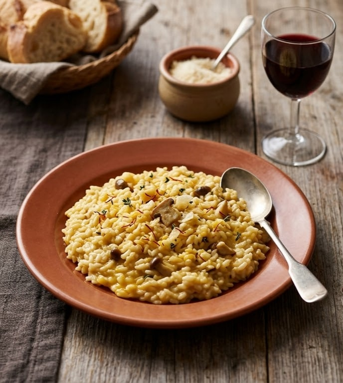

A northern Italian masterpiece celebrated for its luxurious, velvety, and creamy consistency.
The dish leads with the comforting flavor of a deeply infused broth (usually chicken or beef), beautifully balanced by the sharpness of aged Parmesan cheese and the bright acidity of dry white wine.